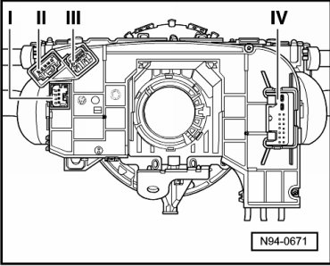
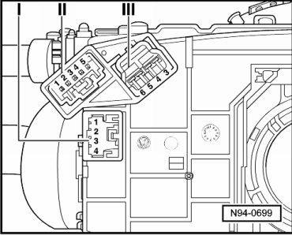
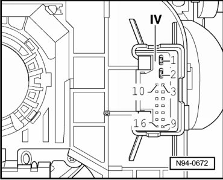

Combination Switch
Steering Column Switch Connector Assignments

I Multi-pin connector for electrical Easy Entry --> [ I - 4-Pin Connector ]
II Multi-pin harness connector for Steering Wheel Tiptronic Switch (E389) --> [ II - 5-Pin Connector ]
III Multi-pin harness connector for Airbag Spiral Spring/Return Spring With Slip Ring (F138) and Steering Angle Sensor (G85)--> [ III - 4-Pin Connector ]
IV Multi-pin harness connector for voltage supply, CAN and terminal 15 --> [ IV - 16-Pin Connector ]
I - 4-Pin Connector

1 Electrical Easy Entry on/off
2 Direction selection
3 Terminal 31, negative
4 not used
II - 5-Pin Connector
1 not used
2 not used
3 not used
4 Terminal 31, negative
5 Tiptronic
III - 4-Pin Connector
3 Spiral spring connection
4 Spiral spring connection
5 Spiral spring connection
6 Spiral spring connection
IV - 16-Pin Connector

1 Terminal 31, negative
2 Terminal 30, positive
3 Powertrain-CAN, shielded
4 not used
5 CCS switch setting "Off"
6 not used
7 not used
8 CAN-comfort, Low
9 CAN-comfort, High
10 Drive system CAN High
11 Drive system CAN Low
12 not used
13 Terminal 15
14 not used
15 not used
16 not used